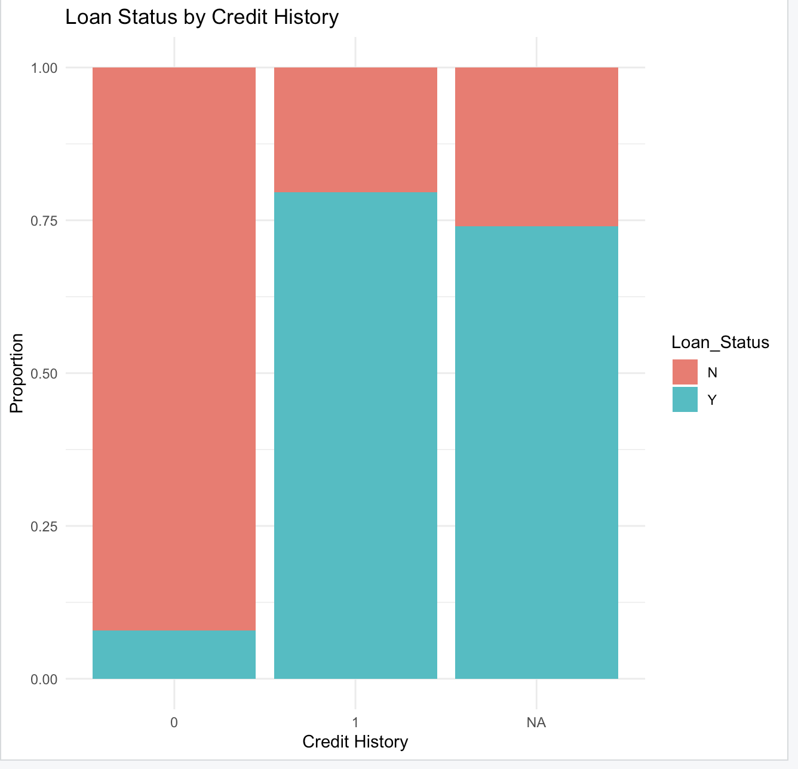
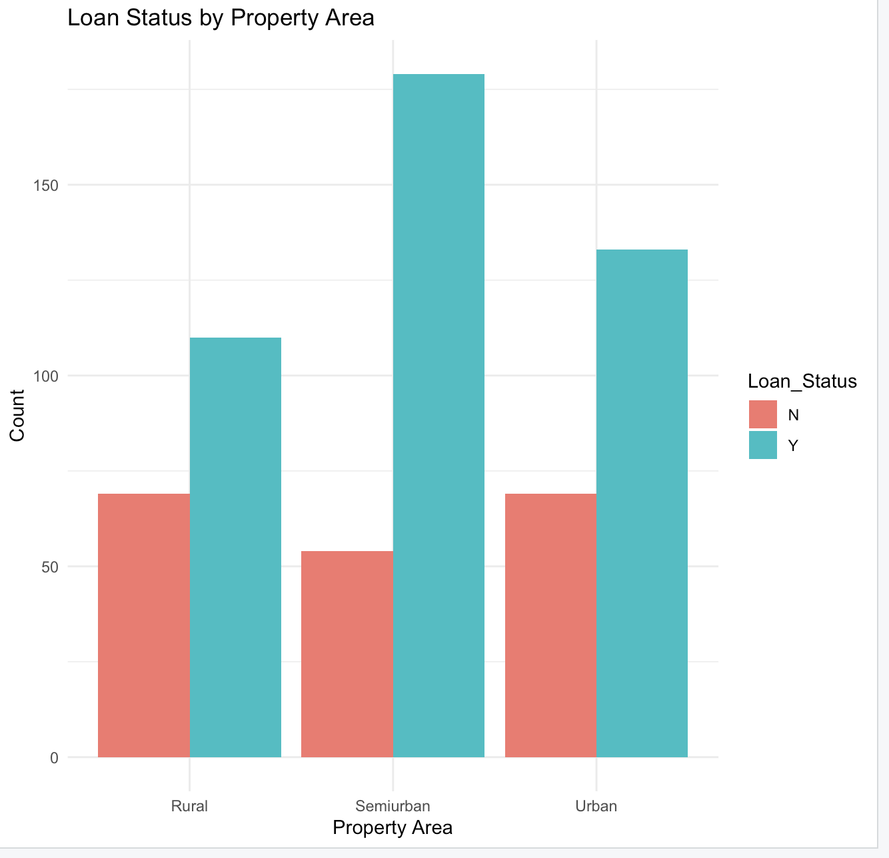

The first research question focuses on understanding: What factors significantly influence the approval of a loan? In order to assist financial institutions in making the best decisions possible, this analysis aims to discover and interpret important determinants of loan approval. Institutions can create data-driven methods to lower default risks and improve equity in loan evaluations by identifying the connections between applicant attributes and the chance of loan approval.
Statistical Model and Methodology:
The binary logistic regression model was used to answer the study topic. Because the response variable (Loan Status) is binary, logistic regression is especially well-suited for this research. The model assesses the impact of a variety of applicant attributes on the likelihood of loan approval.
Key predictors included: • Credit History: A critical factor indicating past repayment behavior.
• Property Area: Geographic location, capturing potential regional trends in approvals.
• Education Level: Reflecting the applicant’s educational background.
• Income Levels: Both Applicant Income and Co-applicant Income assess financial stability.
• Loan Amount and Loan Term: Measuring the size and duration of the loan, both of which are tied to repayment feasibility. The logistic regression model calculates the odds ratio for each predictor, revealing its impact on loan approval. For example, a higher odds ratio for Credit History suggests that applicants with a good credit history are significantly more likely to have their loans approved.
Visualizations and Insights:
- Loan Status by Credit History:

• The bar plot visualizes the proportion of approved (Y) and rejected (N) loans across credit history categories (0, 1 and missing/NA).
• Observation: Applicants with a credit history (Credit History = 1) have a much higher likelihood of approval, with approval rates exceeding 80%. Those with no credit history (Credit History = 0) are predominantly rejected, highlighting the importance of past financial behavior in the loan decision process.
- Loan Status by Property Area:

• This bar plot showcases the count of approved and rejected loans across the three property area categories: Urban, Semiurban, and Rural.
• Observation: Semiurban applicants are the most likely to secure loan approvals, indicating regional disparities. Rural applicants show a more balanced approval and rejection rate, while urban areas lean slightly toward approvals.
Model Findings:
The logistic regression model provided the following key insights: • Credit History emerged as the most influential factor in determining loan approval. Applicants with a credit history (Credit History = 1) were significantly more likely to secure loans compared to those without.
• Property Area showed moderate significance, with applicants in semiurban regions demonstrating higher approval rates.
• Income Levels (Applicant and Co-applicant) had a weaker but notable influence, suggesting that financial stability alone may not guarantee loan approval.
• Other factors such as Loan Amount and Loan Amount Term contributed to the model but with less impact compared to Credit History.
Implications:
The significance of credit history as the main factor influencing loan approval is highlighted by this analysis. By prioritizing applicants with solid credit histories and spotting chances to assist candidates in other categories, financial institutions can use this information to improve their risk assessment frameworks. Initiatives like credit-building products or financial literacy programs, for example, could increase the likelihood that low-income and rural applicants would be approved.